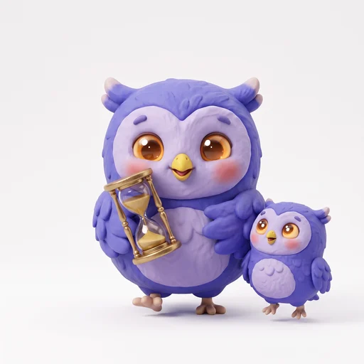

저녁형 부엉이별빛 모험가 부엉이
저녁이 되면 모험심이 반짝이는 아이
이런 강점이 있어요
- 저녁에 에너지가 살아나요
- 변화에 유연해요
- 함께하면 무엇이든 놀이가 돼요
이런 루틴이 잘 맞아요
아침은 짧게, 준비는 전날 밤에
아침이 힘든 건 몸의 리듬 때문이에요. 가방·옷은 전날 밤에 챙기고, 아침 루틴은 3단계 이하로 짧게 해 주세요.
아이루틴에서는: 알람보이는 순서표와 시작 신호
그림 순서표와 시작 신호(알람·타이머)가 도움이 돼요. 처음엔 옆에서 같이 시작하고, 조금씩 손을 떼 주세요.
아이루틴에서는: 비주얼 타이머작은 도전으로
새 루틴을 작은 도전 과제처럼 소개해 보세요. 가끔 순서를 바꿔 줘도 잘 따라와요. 단, 새 습관은 한 번에 하나씩 더해 주세요.
추천 아침 루틴
- 좋아하는 노래 알람
- 타이머 5분 안에 옷 입기
- 아침 먹기
- 출발
저녁에 미리
- 같이 내일 가방 챙기기
어느 유형이 더 좋은 건 없어요. 모든 유형에 저마다의 강점이 있어요. 우리 아이에게 맞는 방법을 찾는 게 중요해요.
습관이 자리 잡는 데는 아이마다 몇 주에서 몇 달까지 걸려요. 조급해하지 말고 한 번에 하나씩 더해 주세요.